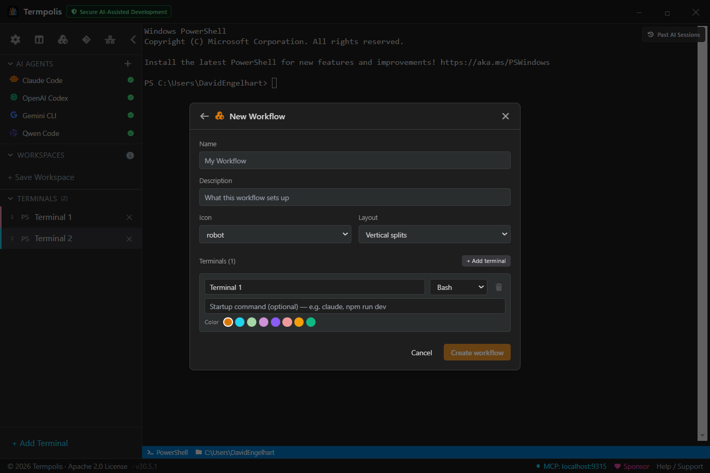
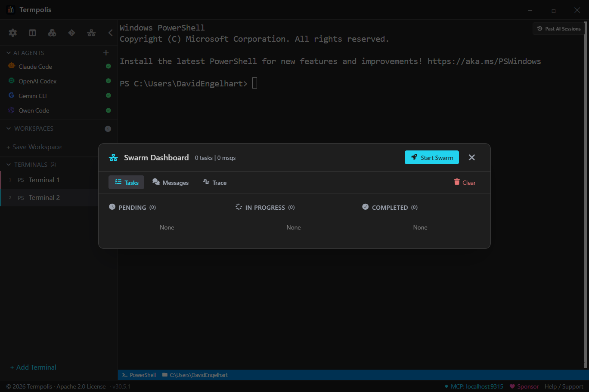
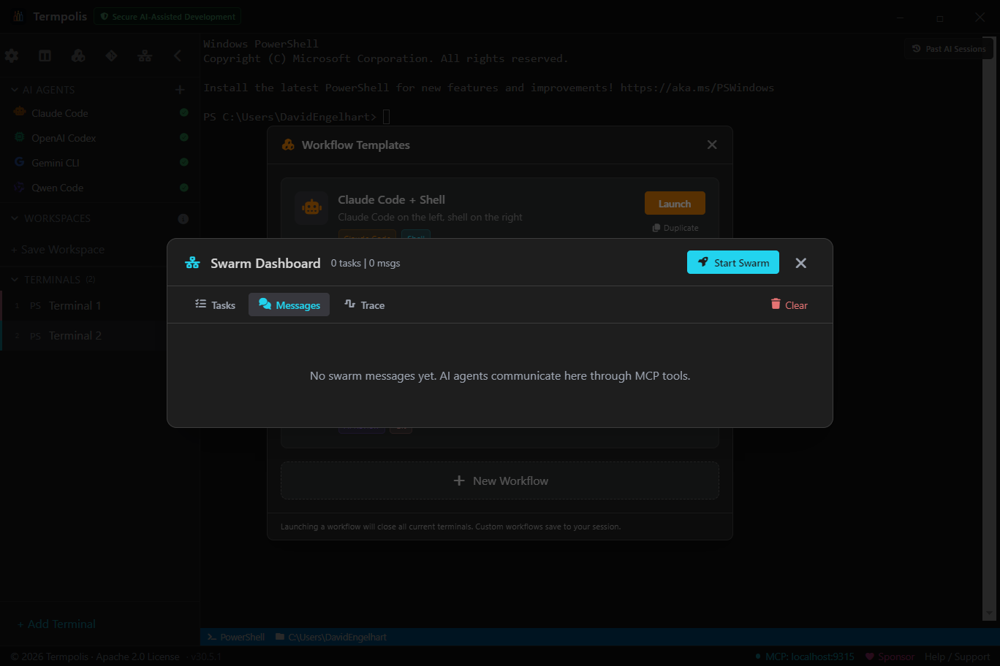
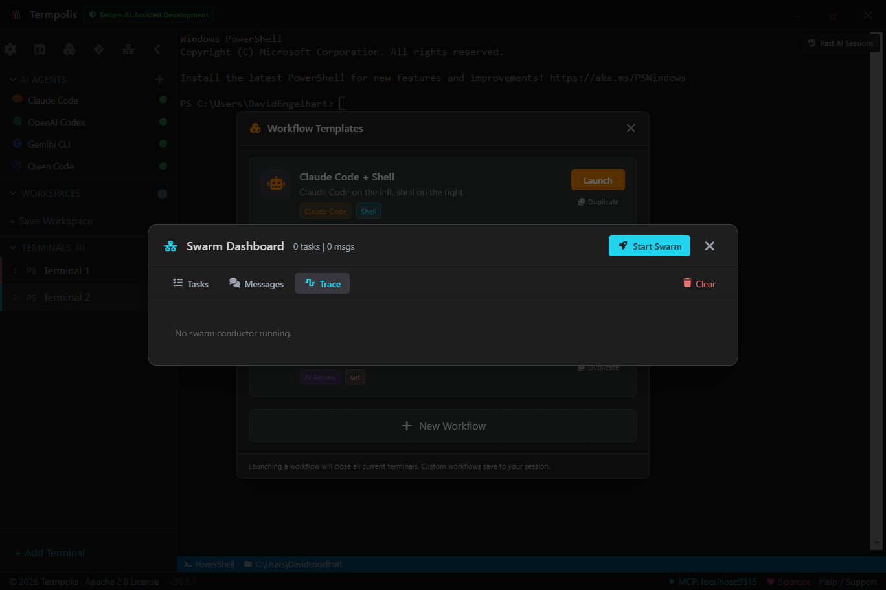

Documentation
Termpolis Docs
The definitive guide to Termpolis, the AI-native terminal where Claude, Codex, Gemini, and Qwen work together as a team. Every feature, every panel, every shortcut.
Overview

Termpolis is a cross-platform desktop terminal manager (Windows, macOS, Linux) built on
Electron + React + TypeScript with node-pty powering the underlying shells.
It ships as a native app, code signed on Windows, notarized on macOS.
What makes it different:
- Multi-agent swarm. Claude, Codex, Gemini, and Aider + Qwen can work together on a task. A dedicated Claude Code instance acts as the conductor.
- MCP server baked in. AI agents control Termpolis via Model Context Protocol, open terminals, run commands, send messages.
- Transparent routing. Every subtask shows which agent got it, why, and what it cost.
- Activity observability. Every token, every tool call, every message from every agent is visible in real time.
- Intervention controls. Pause, cancel, or steer any agent mid-task without leaving the feed.
- Shared memory. A RAG-backed memory store that any agent can read and write via MCP.
- Free local agent. Aider + Qwen3-Coder via Ollama. Zero-cost work is always on the menu.
Installation
Download the latest build from the downloads page or GitHub Releases.
| Platform | File | Signed |
|---|---|---|
| Windows | termpolis-setup-<ver>.exe | Code-signed |
| macOS (Apple Silicon) | termpolis-<ver>-arm64.dmg | Notarized |
| macOS (Intel) | termpolis-<ver>.dmg | Notarized |
| Linux | termpolis-<ver>.AppImage | — |
Requirements
- Windows 10 or 11 (x64)
- macOS 11 (Big Sur) or later, Apple Silicon and Intel builds ship separately
- Linux: AppImage runs on any modern glibc distro
- ~200 MB disk; 512 MB RAM minimum, 2 GB recommended when running multiple agents
Data directory
| Platform | Path |
|---|---|
| Windows | %APPDATA%\termpolis\ |
| macOS | ~/Library/Application Support/termpolis/ |
| Linux | ~/.config/termpolis/ |
First launch

The welcome view is what you see when no terminals are open. It has quick-launch buttons for common shells and AI agents, recent workspaces on the left, and a tips row at the bottom.
Press Ctrl + T (⌘ + T on macOS) to open the new-terminal modal, or click a launch button to spawn a terminal immediately.
Workspaces
Workspaces are the project-level container in Termpolis. Think of them as the tabs in a browser, except each one holds a full set of terminals, a split/grid layout, an active agent, a scrollback history, per-workspace settings, and any panels you've left pinned. You can run many workspaces side-by-side and switch between them without losing state.
What a workspace owns
- Terminals, every open pty in that workspace, with its shell, working directory, label, color, and scrollback buffer.
- Layout, tab view, split view (the full pane tree), or grid view. Restored exactly on relaunch.
- Focus, which terminal was active, cursor position, selection.
- Agent sessions, any Claude Code, Codex, Gemini, or Aider+Qwen runs tied to terminals in the workspace.
- Panel state, which side panels are open and their size.
- Per-workspace overrides, any setting scoped specifically to this workspace (shell default, font size, etc.).
How workspaces persist
Everything above is written to session.json in the Termpolis data
directory (see Installation for the per-platform path) as
soon as it changes, so an unclean shutdown still leaves you with last-known-good
state. Re-opening the app restores the workspaces in the same order with the same
terminals, split layouts, and focus.
Creating a workspace
Use the + Workspace button at the top of the sidebar or the Ctrl + Shift + N shortcut. Each new workspace starts empty; pick a shell to open the first terminal, or apply a workflow template to stamp a whole pre-built layout into it.
Managing workspaces
Right-click any workspace row in the sidebar for:
- Rename, changes the label in the sidebar and the window title when the workspace is active.
- Duplicate, creates a new workspace with the same terminal configuration (shell, cwd, label) but fresh, empty pty sessions. Useful when mirroring a setup for a second feature branch.
- Close, removes the workspace. If any terminals have live child processes, a confirmation dialog lists what's still running.
- Show in file explorer, opens the workspace's working directory in Finder / Explorer / your Linux file manager.
Switching between workspaces
Click a workspace row to activate it. Keyboard users can cycle with Ctrl + Alt + [ / ]. Unsaved terminal output in background workspaces keeps streaming, nothing is paused just because it's not visible.
Workspace root directory
Each workspace has a default working directory that new terminals start in. Set it when you create the workspace, or change it later from Settings → Workspace. Terminals started with the agent launcher or a workflow template inherit this unless they override it per-terminal.
Workspaces vs. workflows
Workspaces are long-lived containers that own state across restarts; workflows are one-shot recipes that populate the current workspace with a pre-configured set of terminals, commands, and a split layout. Think of a workspace as the room you're working in, and a workflow as the "set the room up like this" macro. Launching a workflow inside a workspace closes the existing terminals and replaces them with the workflow's terminals, the workspace stays, the contents get reset.
Terminals

Every pane is a full pty-backed terminal powered by node-pty, real TTY
semantics, xterm escapes, signal forwarding. Not a shim.
Create one with Ctrl + T. Pick a shell, a working directory, optionally an agent profile, plus a label and color.

Closing a terminal with an active process prompts for confirmation, this protects long-running tasks (model downloads, builds, agent sessions) from accidental loss.
Tabs, splits & grid

Terminals are arranged in one of three view modes. Pick whichever fits the task, tabs for deep focus, splits for side-by-side work, grid for watching the swarm.

- Ctrl + \, split horizontally
- Ctrl + Shift + \, split vertically
- Alt + Arrow, focus adjacent pane
- Ctrl + Shift + W, close focused pane
Settings

Open with the gear icon or Ctrl + ,. Changes save immediately, no apply button.
Tabs: Themes, Keybindings, Agent Capability, Shells, Behavior, Advanced.
Themes

Ships with Termpolis Dark (default), Dracula, Solarized Dark, Nord, Gruvbox Dark, Tokyo Night, Monokai. Each applies to terminals, app chrome, and AI conversation syntax highlighting. Import any VS Code theme JSON, the parser maps tokenColors to xterm colors automatically.
Keybindings

Bindings are platform-aware, Ctrl becomes ⌘ on macOS automatically. Conflicts are flagged inline when rebinding.
Agent capability ratings

The heart of smart swarm routing. Score each agent (Claude, Codex, Gemini, Aider+Qwen) from 0–100 across 10 categories: Refactoring, Testing, Documentation, Code review, DevOps/Infra, Debugging, Frontend, Backend/API, Data/SQL, Bulk work. Defaults reflect model-family strengths; tune them to match your experience.
The Token Cost column ($, $$, $$$, Free) drives cost-aware routing.
Command palette

The palette is your keyboard-only shortcut to every action in Termpolis. Actions, workspaces, recent commands, files, all searchable with fuzzy matching, exact matches floating to the top.

Why use it
- Don't remember keybindings? Type the feature name, the palette shows the shortcut next to the action.
- Jump across workspaces in two keystrokes. Ctrl + K, type workspace name, Enter.
- Re-run a recent command anywhere. The palette surfaces your last 50 commands across every terminal, type a fragment, hit Enter, and it runs in the focused pane.
How to use it
- Press Ctrl + K.
- Type a query, e.g. split, new terminal, workspace, launch claude.
- Use ↑ / ↓ to select; Enter runs it; Esc closes.
Prompt templates

Save the prompts you type over and over. Each template supports
{{variables}} that get filled from your current selection, cwd, or a
free-form input when you launch it.
Built-in templates
- Explain this code, pastes current selection as context, asks the agent to walk through it.
- Write tests, generates unit tests for the focused file.
- Refactor for readability, rewrites with a focus on clarity, not behavior changes.
- Find security issues, static-analysis-style review for OWASP-top-10 patterns.
- Document this API, produces JSDoc / TSDoc / docstrings for the selection.
- Code review, strict, adversarial review with a "what would break?" lens.
How to use it
- Select the code you want to discuss in any terminal (or leave empty to use free-form input).
- Press Ctrl + Shift + P.
- Pick a template, Termpolis fills
{{selection}},{{cwd}},{{branch}}, etc. automatically. - Fill any remaining prompts in the form, then click Send to active agent.
- The fully-expanded prompt is written to the focused agent's stdin.
Customizing
Click + New in the template picker or edit
prompt-templates.json in your data directory directly. Each entry is
{id, label, body, variables, defaultAgent}.
Workflow templates

A workflow template is a one-shot setup recipe for the current workspace. Each template describes a set of terminals, their names, colors, shell, and an optional startup command, and a layout (vertical splits or a 2×2 grid). Clicking Launch closes the terminals you have open, spawns the template's terminals in the configured split layout, and fires the startup commands after a brief delay so the shells finish initializing first.
Open the Workflows panel from the Workflows sidebar button.
Built-in workflows
- Claude Code + Shell, Claude Code on the left, plain shell on the right (2-pane vertical split).
- Full Stack Dev, AI agent + Frontend + Backend + Tests in a 2×2 grid.
- Code Review, AI reviewer + Git pane (2-pane vertical split).
Built-ins are read-only. Use Duplicate on a built-in to get an editable copy with the (copy) suffix.
Creating your own

Click + New Workflow at the bottom of the picker. You get a form for:
- Name and Description
- Icon (Font Awesome solid) and Layout (vertical splits or 2×2 grid, the grid requires exactly four terminals to tile cleanly)
- Terminals (1–8), per terminal: name, startup command (optional), shell, and color
Saved workflows appear with a Custom badge in the picker, are
persisted as part of your session alongside workspaces and prompt templates, and sync
via the same save mechanism (session.json in your Termpolis data
directory). You can edit or delete any custom
workflow from its row. On Windows, templates that specify bash are
auto-resolved to Git Bash.
Difference from workspaces
Workflows don't own state the way workspaces do, they're a template you apply. After launch, the terminals they spawn live inside your current workspace and behave like any other terminals. Closing and re-launching the same workflow gives you fresh terminals, not the ones from last time.
Context panel

The Context panel is Termpolis's answer to the "what does the AI actually know right now?" question. It's a sliding pane on the right that shows everything currently in scope for the agents you're working with, so you never have to guess whether Claude saw the file you just edited, or whether Codex knows which branch you're on.
What it shows
- Project root + git branch, the cwd of the focused terminal and the active branch, so an agent can ground its answers in the right repo state.
- File tree, collapsible directory view of the project, click to pin a file into context.
- Active agent, which AI is focused, its model, and a live token counter. When you hit 80% of the model's context window, the bar turns amber; at 95% it turns red, your cue to compact or wrap up.
- Recent files, last 20 files the agent (or you) read, edited, or ran. Click to re-open in Monaco's diff view.
- Pinned items, anything you've pinned: a file, an activity event, a prompt, a memory entry. Pins stay visible across sessions.
- Task chain, when a swarm is running, the current task, its parent, and its dependencies.
Why it's helpful
- No more "please re-share the file" loops. Pin it once and every agent can read it.
- Catch token pressure before it compacts. The live counter means you'll never be surprised when an agent suddenly forgets the first half of your conversation.
- Explicit context, not implicit slurp. Agents only see what you've put here, no silent indexing of your filesystem. Safer for private code.
- Share context across agents. Pin a spec once and Claude, Codex, Gemini, and Qwen all read from the same truth.
How to use it
- Press Ctrl + Shift + E to open.
- Click File tree to browse; right-click a file → Pin to context to make it permanent.
- Right-click any activity feed event → Pin to float it to the top.
- When an agent asks "what am I looking at?", it reads from this pane directly via MCP.
- Click the × on any pin to remove it; pins save to
~/.termpolis/context-pins.json.
History search

Spans every terminal Termpolis has ever opened, not just the current shell's history file. Filter by command, cwd, exit code, time range, or shell type. Click a result to copy, re-run, or pin to context.
Conversation search

Open with Ctrl + Shift + I. Every AI agent session in
Termpolis, Claude Code, Codex, Gemini CLI, Aider+Qwen, swarm runs, and the conductor
itself, is recorded event-by-event to ~/.termpolis/activity.jsonl.
Conversation search is the UI on top of that log.
What's indexed
- Prompts, every user message sent to an agent.
- Assistant messages, the full reply text, plus intermediate thinking blocks where available.
- Tool calls, the tool name and arguments (e.g.
Edit,Bash,WebSearch). - Tool results, the response the agent got back (stdout, file contents, etc.).
- Errors, anything the agent raised or the pty emitted on stderr.
- Token updates, periodic snapshots of cumulative input/output tokens.
- Interventions, every Pause / Cancel / Steer action you took, who took it, and when.
Filters
- Full-text, matches prompt text, assistant replies, and tool arguments.
- Agent, narrow to Claude, Codex, Gemini, Qwen, Conductor, or "all".
- Kind, prompt / tool_call / tool_result / error / message.
- Time range, last hour, today, last 7 days, or custom.
- Scope, current terminal only, current session, or all history.
Why it's helpful
- "How did I fix this last time?", find the exact prompt and solution from a month ago.
- Audit what an agent actually did. When something breaks, grep the tool-call log, every
Edit, everyBash, every file touched. - Reuse successful prompts. Click a hit → Copy prompt to rerun it in a fresh session.
- Compare agent answers. Search the same question across agents to see how Claude, Codex, and Gemini differed.
How to use it
- Press Ctrl + Shift + I.
- Type a query, e.g. "regex for ISO dates", "docker-compose error", "why did claude say no".
- Narrow with the kind + agent dropdowns if the hit list is noisy.
- Click a result to expand the full event, prompt and answer side by side.
- Use the Copy prompt, Re-run in new session, or Pin to context actions from the hit's kebab menu.
Git panel

Current branch + ahead/behind, staged & unstaged sections with inline diff, last 50 commits as a graph, actions for commit/push/pull/fetch/stash/branch switch. Click the ✨ next to the commit-message input and an agent drafts a message from the staged diff.
Every action runs as a real git command in a spawned process, no
reimplementation, so you can always drop to the CLI and see the same state.
AI agent profiles
Launch any AI CLI as a profiled terminal: Claude Code, Codex, Gemini CLI, Aider. Profiles come pre-configured with the right shell + startup command, a color + label, an MCP bootstrap (where supported), and an optional dedicated working directory. Custom profiles take any command: if it's in PATH, you can profile it.
MCP server
Termpolis ships an MCP (Model Context Protocol) server so AI agents can control the
app from inside a conversation. It listens on http://localhost:48211 by
default.
These are not commands you type. The entries in the table below are
MCP tools, function calls that an AI agent (Claude, Codex, Gemini,
etc.) invokes through the Model Context Protocol, the same way an agent uses
Read, Bash, or WebSearch. You never type
open_terminal yourself; instead, you say something like
"open a new PowerShell terminal in the repo root" and the agent calls the
open_terminal tool to do it.
Connecting an agent to Termpolis MCP
Any MCP-aware client can talk to the server. Register it once in the client's MCP
config, for example, in ~/.config/claude/mcp.json or Codex's
mcp_config.json:
{
"mcpServers": {
"termpolis": {
"url": "http://localhost:48211",
"headers": {
"Authorization": "Bearer ${TERMPOLIS_MCP_TOKEN}"
}
}
}
}
The token is written to ~/.termpolis/mcp-token on every launch. Most
official agent profiles (Claude Code, Codex, Aider) are wired up automatically when
launched from inside Termpolis, nothing to configure.
Available tools
Once connected, the agent can call any of these tools. You'll see each invocation in
the Activity Feed as an mcp_audit event.
| Tool | What the agent does when it calls this |
|---|---|
list_terminals | Enumerate open terminals, agent uses this to find a working session. |
open_terminal | Spawn a new terminal with a chosen shell + cwd. |
close_terminal | Close a terminal by ID when its work is done. |
focus_terminal | Bring a terminal to the foreground in the UI. |
send_input | Type text or control chars into a terminal's stdin. |
read_buffer | Read the last N lines of output from a terminal. |
wait_for_prompt | Block until a regex appears in the buffer (e.g. wait for $ to return). |
list_workspaces | Enumerate workspaces. |
switch_workspace | Change the active workspace. |
git_status | Get a JSON summary of the current repo (branch, ahead/behind, staged). |
broadcast_message | Send a swarm-wide notification to every active agent. |
get_session_id | Return the calling session's opaque ID for self-identification. |
post_activity | Push a custom event into the Activity Feed. |
memory_write | Persist a labeled memory entry into the shared memory store. |
memory_search | RAG search (semantic + keyword) across shared memory. |
memory_list | List recent memory entries with filters. |
Security
- Bearer token, a random token is generated per app launch and written to
~/.termpolis/mcp-token. Every request must include it in theAuthorizationheader. - Origin checks, requests from browser origins are rejected unless explicitly allowlisted.
- Rate limits, 60 req/s per client, 10 req/s for destructive tools (
close_terminal,send_input). - Audit log, every tool call is written to
~/.termpolis/mcp-audit.jsonland emitted as an Activity Feed event.
Swarm dashboard

The dashboard is where you watch a running swarm. Three tabs, each answering a different question about the active run.


What each tab is for
- Tasks, answers "where are we?". Full DAG with Pending / In progress / Completed columns, per-task assignee and status, dependencies drawn as edges. Click a task to see its prompt, the agent's output so far, and the handoff chain.
- Messages, answers "what are the agents saying?". Live stream of every handoff, broadcast, and tool result routed between agents. Use this to diagnose "why is Codex waiting?"
- Trace, answers "what is the conductor thinking?". Timeline of the conductor's own decisions, planning, re-planning, agent picks, merge calls.
How to use it
- Open with Ctrl + Shift + S at any time, no swarm needs to be running.
- If no swarm is active, click Start Swarm to launch the Start Swarm wizard.
- Switch tabs freely, the dashboard stays scoped to the active run.
- Right-click any task → Open agent terminal to drop into that agent's live pty.
- Need to abort? Click the trash icon next to the swarm title to clear all messages and tasks (see below).

Clearing does not kill the underlying agent pty's. Use the intervention controls if you need to stop agents mid-flight too.
AI conductor

The conductor is a dedicated Claude Code instance running with a system prompt purpose-built for orchestration. When you launch a swarm, it's the conductor that reads your task, searches shared memory for relevant prior work, decomposes the task into subtasks, picks the best-fit agent per subtask (based on capability ratings + current load + cost), delegates via MCP, watches progress, and decides when to merge partial results, re-plan, or declare done.
Not keyword matching, actual AI reasoning, because the conductor is itself a frontier model. Open its terminal and watch it think live.
Launching a swarm, step by step
- Press Ctrl + Shift + S or click Start Swarm on the Welcome screen.
- Task, describe what you want built in plain English. Be specific; the conductor's decomposition quality scales with your clarity.
- Working directory, pick the repo the swarm will operate in. All agents inherit this cwd.
- Agents, toggle which agents are allowed to participate. Unchecked agents won't be assigned work.
- Budget, optional token and time ceilings. The conductor halts the run and asks you before exceeding.
- Launch, the wizard spawns the conductor in a hidden terminal and opens the Swarm Dashboard.
What happens next
- Conductor reads your task → queries shared memory for related prior work.
- Decomposes into a DAG of subtasks with explicit dependencies.
- For each subtask, picks an agent: capability rating × inverse cost × current load.
- Spawns the agent terminal via
open_terminal(MCP) and sends the prompt viasend_input. - Watches tool calls + token usage via the Activity Feed; intervenes if an agent stalls or errors out.
- When a task completes, writes the result to shared memory and unblocks dependents.
- When the DAG is done, presents a summary and offers a swarm review.
When to use a swarm vs. a single agent
- Single agent, tight iteration loops, quick fixes, interactive exploration. You're the conductor.
- Swarm, parallelizable tasks (build frontend + backend + tests simultaneously), long-running migrations, when you want cost-aware routing across agents, or when the task description reads like a spec more than a prompt.
Activity feed

Open from the sidebar (Ctrl + Shift + A) or any
terminal's context menu. Event types: message, tool_call,
tool_result, token_update, compaction,
error, status_change, mcp_audit.
Three filters combine: full-text search, kind dropdown, agent-type dropdown. Open scoped to a terminal or globally across all sessions, scope is labeled in the header. Right-click an event → Pin to float it to the top of the context panel.
Intervention controls
Every scoped Activity Feed includes a row of intervention controls above the event list:
- Pause, sends
ESC(0x1B) to the agent's pty. - Cancel, sends a single
Ctrl+C(0x03). - Interrupt, sends double
Ctrl+C(0x03 0x03), hard stop. - Steer, type a new instruction and send it directly to the agent's stdin.
Every agent is a pty, so writing control chars or text to stdin is the fastest, most reliable way to take over. No new IPC surface. Each intervention is logged as an event , full audit trail of every mid-flight correction.
Swarm review
When a task requires review before handoff (default for code-review tasks), the conductor pauses and opens the Swarm Review Panel, task title, assignee output, diff if applicable, and three buttons: Approve, Request Changes, Reject, plus an optional comment.
Approve hands off downstream. Request Changes reassigns to the same agent with your comment. Reject drops the output and re-plans.
Shared memory (RAG)
A cross-agent memory store backed by JSONL + embeddings. Any agent can:
- Write via
memory_write, stores{label, content, tags, terminalId, ts}plus an embedding from Ollama'snomic-embed-text. - Search via
memory_search, cosine similarity over embeddings, blended with keyword overlap. - List via
memory_list, recent entries with filters.
Why it matters: when Claude figures out your auth module, Codex shouldn't have to
figure it out again. Memory is context-sharing at the swarm level. Lives at
~/.termpolis/swarm-memory.jsonl, plain text.
Observability
A full observability stack for AI work, the "watchers" system. A lightweight in-process event bus that watches for:
- Token pressure, approaching compaction.
- Stuck sessions, agent silent for > N seconds.
- Error cascades, repeated errors in a short window.
- Redundancy, two agents doing overlapping work.
- Efficiency, rolling token-cost-per-task average.
Watchers surface alerts in the status bar, activity feed, or system notifications. Thresholds tunable in settings.
Status bar

Bottom strip, left to right: workspace + git branch, focused terminal's shell + cwd, active-agents summary, swarm progress %, session-wide token counter, watcher notifications, MCP server indicator (green = healthy).
Keyboard shortcuts
| Action | Windows / Linux | macOS |
|---|---|---|
| New terminal | Ctrl+T | ⌘+T |
| Close focused terminal | Ctrl+W | ⌘+W |
| Next tab | Ctrl+Tab | ⌘+] |
| Previous tab | Ctrl+Shift+Tab | ⌘+[ |
| Jump to tab N | Ctrl+1…9 | ⌘+1…9 |
| Split horizontal | Ctrl+\ | ⌘+\ |
| Split vertical | Ctrl+Shift+\ | ⌘+⇧+\ |
| Focus adjacent pane | Alt+Arrow | ⌥+Arrow |
| Command palette | Ctrl+K | ⌘+K |
| Settings | Ctrl+, | ⌘+, |
| Prompt templates | Ctrl+Shift+P | ⌘+⇧+P |
| Workflow templates | Ctrl+Shift+F | ⌘+⇧+F |
| Context panel | Ctrl+Shift+E | ⌘+⇧+E |
| History search | Ctrl+Shift+H | ⌘+⇧+H |
| Conversation search | Ctrl+Shift+I | ⌘+⇧+I |
| Git panel | Ctrl+Shift+G | ⌘+⇧+G |
| Activity feed | Ctrl+Shift+A | ⌘+⇧+A |
| Swarm dashboard | Ctrl+Shift+S | ⌘+⇧+S |
| New workspace | Ctrl+Shift+N | ⌘+⇧+N |
| Paste | Ctrl+Shift+V | ⌘+V |
| Zoom in / out | Ctrl+= / Ctrl+- | ⌘+= / ⌘+- |
| Reset zoom | Ctrl+0 | ⌘+0 |
Architecture
┌─────────────────────────────────────────────────────┐
│ Renderer (React) │
│ ├── Sidebar, Terminals, Panels │
│ ├── Activity Feed (observability UI) │
│ ├── Swarm Dashboard + Conductor view │
│ └── IPC client → window.termpolis bridge │
└──────────────────┬──────────────────────────────────┘
│ Electron IPC
┌──────────────────▼──────────────────────────────────┐
│ Main process (Node) │
│ ├── Terminal manager (node-pty) │
│ ├── Session persistence (session.json) │
│ ├── Git adapter │
│ ├── MCP server (HTTP, 17 tools) │
│ ├── Swarm memory (JSONL + embeddings) │
│ ├── AI conductor (spawns Claude Code as a child) │
│ └── Watchers (event bus + alerts) │
└──────────────────┬──────────────────────────────────┘
│ localhost:48211 (MCP)
┌──────────────────▼──────────────────────────────────┐
│ AI agents (Claude, Codex, Gemini, Aider+Qwen) │
│ Each in its own pty-backed terminal │
└─────────────────────────────────────────────────────┘
Tech stack: Electron 29, React 18, TypeScript 5, Vite 5 (electron-vite), node-pty, xterm.js, Vitest (2100+ tests, >90% line coverage), Playwright, electron-builder, Azure Trusted Signing, notarytool.
Troubleshooting
Found a bug that isn't here?
Open an issue on GitHub →
Include your OS + version, Termpolis version (Settings → About), and the most recent entries from ~/.termpolis/logs/.
Installation & first-run
Windows: "Windows protected your PC" SmartScreen warning. Click More info → Run anyway. Termpolis is code-signed (SSL.com), but newly signed builds need reputation time before SmartScreen stops flagging them. The warning disappears once enough people download the release.
macOS: "Termpolis is damaged and can't be opened." Gatekeeper couldn't verify the signature, usually a partial download. Re-download the DMG from GitHub Releases, verify the file size matches, and mount again. If it still fails, open System Settings → Privacy & Security, scroll to the bottom, and click Open Anyway next to the Termpolis entry.
macOS: "Permission denied" when launching a terminal. Grant Termpolis Full Disk Access in System Settings → Privacy & Security → Full Disk Access. Re-launch after granting.
Linux: AppImage won't run. Mark it executable: chmod +x Termpolis-*.AppImage. On systems with hardened FUSE, extract and run the inner binary: ./Termpolis-*.AppImage --appimage-extract && ./squashfs-root/termpolis.
Data directory didn't appear. Termpolis creates it on first run, make sure you actually clicked "Open" rather than dismissing the first-launch dialog. Paths: %APPDATA%\termpolis\ (Windows), ~/Library/Application Support/termpolis/ (macOS), ~/.config/termpolis/ (Linux).
Terminals
Terminal won't start. Check the shell path in Settings → Shells. On Windows, PowerShell 7 lives at C:\Program Files\PowerShell\7\pwsh.exe; WSL needs wsl.exe on PATH. On macOS, if /bin/zsh gives "permission denied", re-grant Termpolis Full Disk Access, launchd blocks unsigned/unapproved apps from spawning shells by default.
Terminal hangs on first prompt. Your shell's startup files (.bashrc, .zshrc, PowerShell $PROFILE) may be waiting on input or hitting a slow network check. Open the shell outside Termpolis to confirm; the fix is in your dotfiles, not the app.
Output looks garbled / escape codes show as text. The shell detected a non-TTY environment. Make sure the Agent profile field is empty if you're launching a plain shell. Settings → Shells → Reset defaults fixes most cases.
Copy/paste shortcuts don't work. On Windows/Linux, use Ctrl + Shift + C / V inside terminals (bare Ctrl + C sends SIGINT). On macOS, ⌘ + C / V work everywhere.
Font looks wrong / icons are boxes. The app ships its own icon font, but if it failed to load (usually due to a theme override), re-select a built-in theme or run Reset theme from Settings → Themes.
Agents & CLI tools
Agent launch button fails silently. The CLI isn't on your PATH. Run claude --version (or codex, gemini, aider) in a Termpolis terminal to confirm. On macOS, GUI-launched apps don't always inherit $PATH, restart Termpolis after updating ~/.zprofile (not just ~/.zshrc), or relaunch from Terminal with open -a Termpolis.
Wrong claude / codex binary runs. If you've installed the CLI via multiple package managers (Homebrew, npm, cargo), PATH order decides the winner. Use which claude to see which one Termpolis will launch. Override per-agent in Settings → Agents.
Agent exits with "API key not set". Each agent's env vars come from the login shell, not from a .env in your workspace. Put export ANTHROPIC_API_KEY=... in ~/.zprofile / ~/.bash_profile / PowerShell $PROFILE, then relaunch Termpolis.
Swarm, MCP, and memory
MCP indicator in status bar is red. The MCP server failed to start. Check ~/.termpolis/logs/mcp.log. Common causes:
- Port 48211 already in use, another instance or a crashed process still owns it. Kill stray
termpolisprocesses, or change the port in Settings → Advanced. - Firewall blocking localhost, rare but possible. Add an exception for the Termpolis binary.
- Token file write failed,
~/.termpolis/mcp-tokencouldn't be written. Fix directory permissions (chmod 700 ~/.termpolis).
Swarm conductor doesn't launch. The conductor spawns a Claude Code child process that needs claude on PATH. Watch ~/.termpolis/logs/conductor.log for startup output.
Swarm hangs mid-task / agents stop posting activity. Open Activity Feed, if the agent is running but not emitting events, its MCP connection may have dropped. Use Pause → Reset session in the Swarm Dashboard to recover. If a specific agent repeatedly drops, its MCP token probably expired, restart Termpolis for fresh tokens.
Memory search returns nothing. Embeddings require Ollama with nomic-embed-text pulled. Run ollama serve and ollama pull nomic-embed-text. New writes will succeed; historical keyword-only entries still match.
Updates & performance
Update notification appears but the update doesn't install. The auto-updater needs write access to the app bundle. On Windows, run the installer manually from GitHub Releases if the in-app updater fails. On macOS, drag the new DMG contents over the existing app. On Linux, download and replace the AppImage.
App is slow to start / very high memory. A corrupted session file occasionally causes runaway restoration. Back up session.json in your data directory, delete it, and relaunch, you lose restored workspace state but get a clean baseline.
Terminal scrollback is sluggish. Default xterm scrollback is 10,000 lines. If you've pasted very large logs, scrolling slows down. Settings → Terminals → Clear scrollback resets without restarting.
Session corruption & reset
App opens to a blank screen. Sign of a broken session.json. Close Termpolis, rename session.json in the data directory, relaunch, the app creates a fresh session. Workspaces will be empty but the app is usable again; the old file is preserved for diffing later.
Reset everything. Close Termpolis, delete the entire data directory (see Installation), relaunch. Wipes workspaces, settings, themes, prompt templates, custom workflows, swarm history, and memory.
Reporting a bug
If none of the above fixes your problem, open an issue. Please include:
- OS + version (e.g., Windows 11 23H2, macOS 14.3, Ubuntu 22.04).
- Termpolis version (Settings → About).
- Steps to reproduce, as minimal as you can make them.
- Relevant log tail from
~/.termpolis/logs/(main log plusmcp.logorconductor.logif swarm/MCP-related). - A screenshot or short screen recording if it's a UI bug.